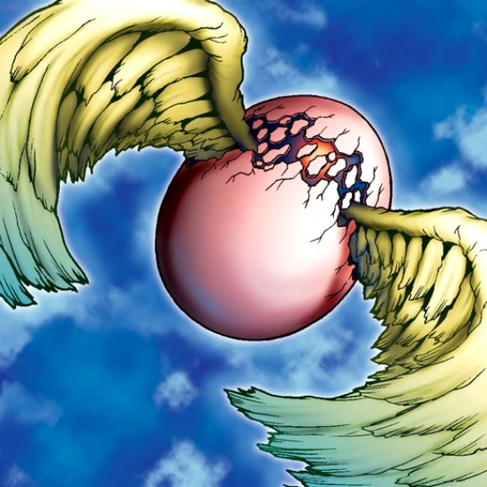

Winged Egg of New Life

STATS
ATK: 1400
DEF: 1700DECK COST
Deck Cost per Card: 31Fusion List (5 Possible Fusions)
- Winged Egg of New Life + Dancing Elf = Dark Witch
- Winged Egg of New Life + Goddess with the Third Eye = Dark Witch
- Winged Egg of New Life + Harpie Lady = Dark Witch
- Winged Egg of New Life + Spirit of the Harp = Dark Witch
- Winged Egg of New Life + Mystical Elf = Dark Witch